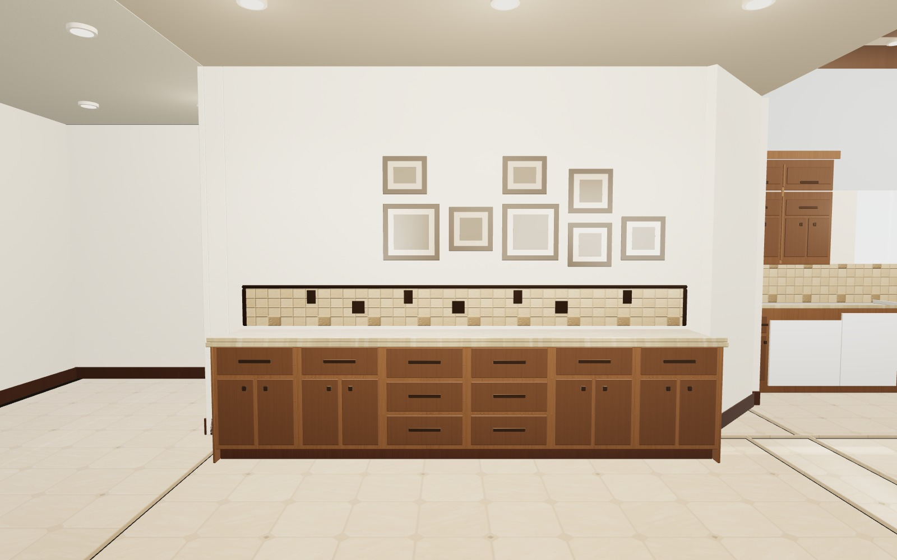
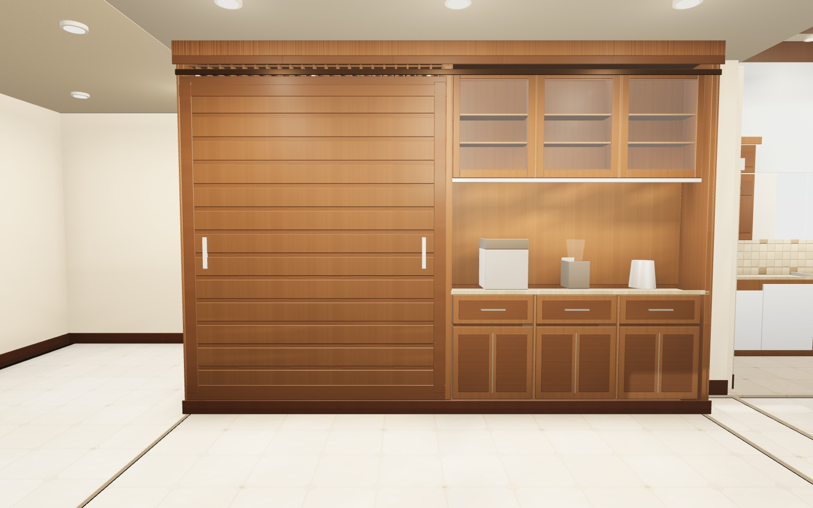

The dining room
A wall of wine.
A wall of coffee.
Fourteen feet of stained alder, floor to ceiling,
where the drop counter used to be.
Before
The drop counter did its job.
Thirty years of keys, mail and homework. The granite was good. The wall above it was always waiting.
The walk
Down the hallway.
14 feet.
Floor to ceiling.
Wine to the left. Coffee to the right. One piece of furniture.
The reveal
Slide.
A solid slat door — seven-and-a-quarter-inch boards — glides across the wine bay.
Inside
0 bottles.
Stemware at eye level. A display shelf above. Bulk storage in X-bins below a stone service ledge.
The coffee side
The other
84 inches.
The door slides home. A 40-inch stone landing for the machines. Cups behind glass, lit from below.
Through the house
It ends where the kitchen begins.
That’s the next project.
Explore
Walk it yourself.
WASD move · drag to look · Esc endsHold the arrows to move · drag the scene to look
Before / After
Same wall. New job.


The piece
- Run
- 14′-0″ × 19″ × 118″
- Wine
- 259 bottles · 399 max
- Coffee landing
- 40″ stone
- Door
- Solid slat · 7¼″ boards
- Finishes
- House alder · Oak · Walnut · Espresso
- Dining room
- 15′-0″ × 20′-8⅛″